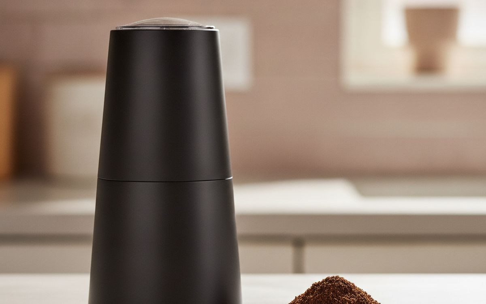
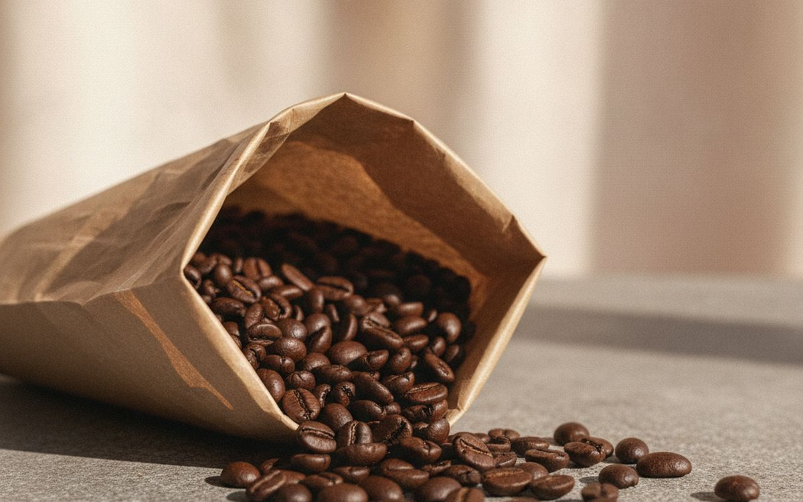
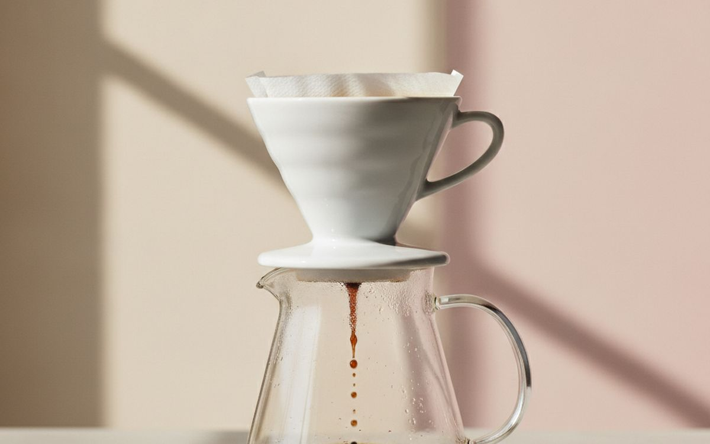
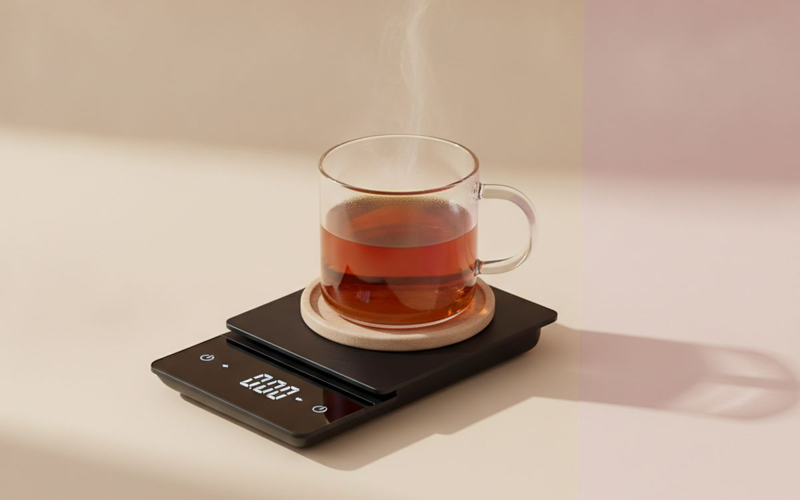
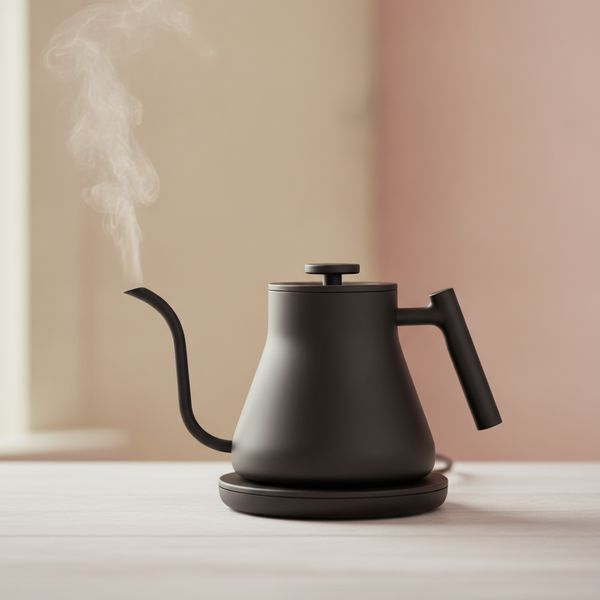
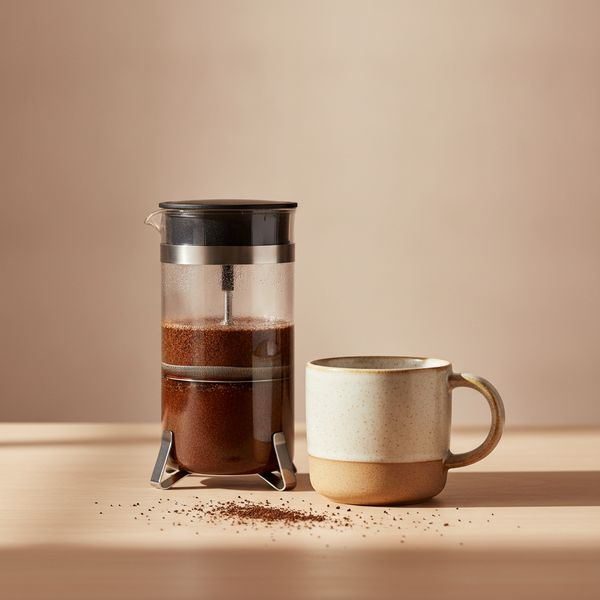
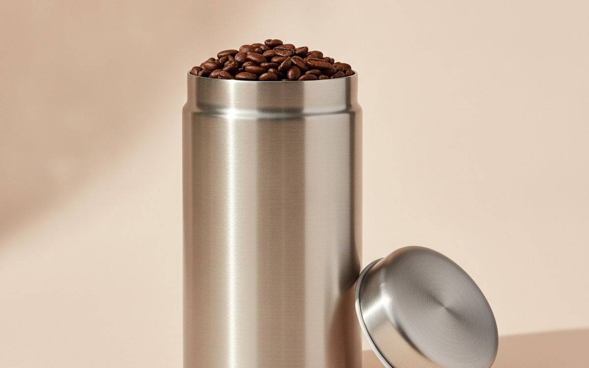
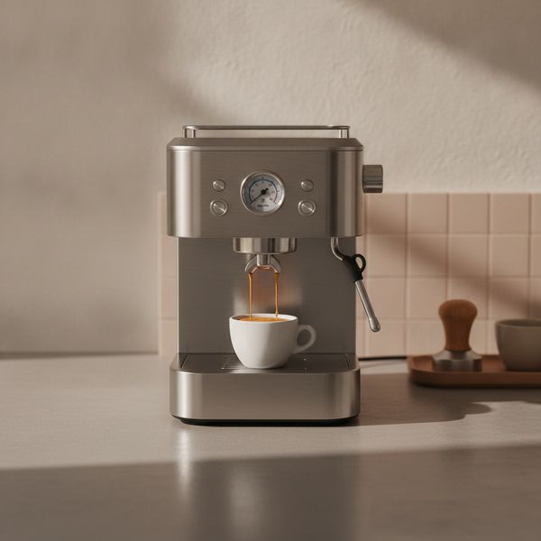
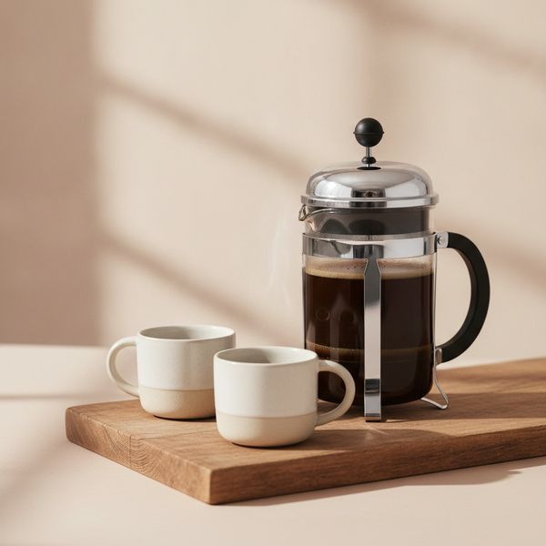
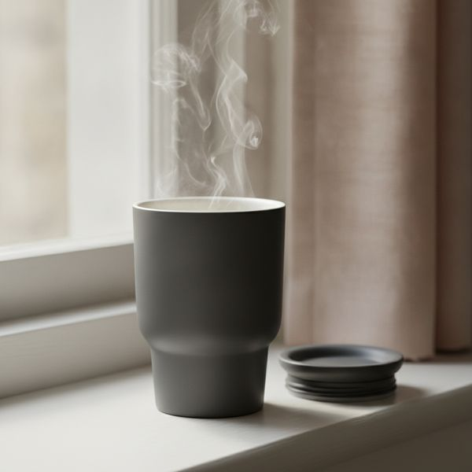

Zehn Zubehörteile, die den Kaffee in Ihrer Tasse wirklich verändern – sortiert danach, wie sehr sie ihn für das investierte Geld verbessern.
Die meisten Leute rüsten ihre Kaffeeausstattung in der völlig falschen Reihenfolge auf. Sie kaufen zuerst die Espressomaschine und wundern sich dann zwei Jahre lang, warum der Espresso nicht annähernd so schmeckt wie im Café um die Ecke. Dabei war die Maschine nie das Problem – sondern alte Supermarktbohnen und eine Schlagmühle.
Deshalb ist diese Liste nach ihrer Wirkung geordnet: Wie viel besser Ihr Kaffee pro investiertem Geld wird. Die ersten drei Produkte bringen Ihnen mehr als die letzten drei zusammen, und zwei davon kosten unter 40 $. Selbst wenn Sie nur den Anfang dieser Seite lesen, haben Sie schon den nützlichsten Teil mitgenommen.
Die unten genannten Preise sind ungefähre Marktpreise zum Zeitpunkt der Erstellung dieses Artikels und ändern sich ständig, besonders bei Rabattaktionen. Betrachten Sie sie als groben Rahmen für Ihr Budget, nicht als verbindliches Angebot – prüfen Sie vor dem Kauf immer den aktuellen Preis.
Hinweis. Die Links auf dieser Seite sind Affiliate-Links. Wenn Sie darüber kaufen, erhalten wir unter Umständen eine Provision ohne Mehrkosten für Sie. Das beeinflusst weder die Auswahl noch die Reihenfolge dieser Liste.
Wie wir ausgewählt haben
Unsere Auswahl basiert auf veröffentlichten Labortests, langfristigen Erfahrungsberichten von Besitzern und spezialisierten Kaffeeforen, abgeglichen mit aktuellen Händlerangeboten. Wir haben nicht jedes hier vorgestellte Produkt selbst getestet. Wenn es in einer Kategorie einen klaren Konsenssieger gibt, sagen wir das auch. Wenn die Wahl wirklich von Ihrem Budget oder Ihrer Küche abhängt, zeigen wir Ihnen die Kompromisse auf, anstatt ein falsches Urteil abzugeben.
Auf einen Blick
Die Preise sind Näherungswerte zum Zeitpunkt der Erstellung und ändern sich häufig.
Die Empfehlungen

1
Das erste und wichtigste UpgradeBaratza Encore ESP
$180–220
Wenn Sie nur eine einzige Sache von dieser Seite kaufen, dann eine Mühle mit Mahlwerk. Eine Schlagmühle zertrümmert die Bohnen zu einer Mischung aus Brocken und Staub, was zu einem Kaffee führt, der gleichzeitig bitter und sauer schmeckt – keine Maschine danach kann das wieder gutmachen. Ein Kegelmahlwerk hingegen schneidet die Bohnen auf eine einheitliche Größe, und der Unterschied ist sofort und deutlich schmeckbar. Die Encore ESP ist die Version von Baratzas langlebigem Arbeitstier, die feiner mahlen kann und somit sowohl für Filterkaffee als auch für echten Espresso geeignet ist. Sie ist nicht schnell und nicht leise, aber es ist die Mühle, die Fachgeschäfte seit über einem Jahrzehnt Anfängern empfehlen, und Baratza verkauft auch Jahre nach dem Kauf noch Ersatzteile dafür.
Warum es hier steht
- Gleichmäßiges Mahlgut für Filter und Espresso
- Mahlwerke und Ersatzteile sind jahrelang verfügbar
- Einfach zu zerlegen und zu reinigen
Gut zu wissen
- Laut und langsamer als eine Premium-Mühle
- Das Kunststoffgehäuse wirkt billiger, als der Preis vermuten lässt

2
Die günstigste echte VerbesserungFrische ganze Bohnen mit Röstdatum
$15–25 per bag
Kaffee ist ein landwirtschaftliches Produkt mit einem kurzen Genussfenster. Die Tüte aus dem Supermarkt, die nur mit einem weit entfernten Haltbarkeitsdatum versehen ist, hat dieses Fenster meist schon um Monate überschritten. Achten Sie auf ein aufgedrucktes Röstdatum und kaufen Sie Bohnen, die innerhalb der letzten drei bis vier Wochen geröstet wurden. Ganze Bohnen behalten ihre Aromen viel länger als vorgemahlener Kaffee, der schon wenige Tage nach dem Öffnen schal schmeckt. Dies ist der einzige Punkt auf der Liste, der fast nichts extra kostet und jede einzelne Tasse, die Sie von nun an zubereiten, verändert – deshalb steht er so weit oben, noch vor Hardware, die zehnmal so viel kostet.
Warum es hier steht
- Kostet dasselbe wie die alte Alternative
- Verbessert jede Tasse, unabhängig von der Ausrüstung
- Das Röstdatum verrät, was Sie wirklich kaufen
Gut zu wissen
- Muss alle paar Wochen nachgekauft werden
- Gute lokale Röstereien gibt es nicht überall

3
Bester günstiger KaffeebereiterHario V60 dripper and server
$25–40
Der V60 ist die günstigste Methode, um wirklich exzellenten Kaffee zuzubereiten, und es ist der Handfilter, den die meisten Spezialitätencafés verwenden. Die Kegelform und die spiralförmigen Rillen ermöglichen es, den Brühvorgang durch das Aufgießen zu steuern. Das bedeutet, er belohnt Aufmerksamkeit – und bestraft Nachlässigkeit. Man muss also erst lernen, mit ihm umzugehen. Geben Sie sich zwei Wochenenden Zeit. Sobald Sie eine Routine entwickelt haben, liefert er eine klarere, süßere und differenziertere Tasse als jede Filterkaffeemaschine unter ein paar Hundert Dollar, und das ganze Set passt in eine Schublade.
Warum es hier steht
- Herausragende Kaffeequalität für den Preis
- Kompakt, nichts kann kaputtgehen
- Filter und Zubehör sind günstig und überall erhältlich
Gut zu wissen
- Die Technik ist entscheidend – die ersten Tassen werden unbeständig sein
- Brüht nur ein oder zwei Tassen auf einmal, keine ganze Kanne

4
Waage mit dem besten Preis-Leistungs-VerhältnisTimemore Black Mirror Basic 2 scale
$45–65
Eine Waage macht aus einer zufällig guten Tasse eine wiederholbar gute Tasse. Kaffee ist ein Verhältnis – Gramm Kaffee zu Gramm Wasser – und das Schätzen nach Augenmaß bringt genug Abweichung mit sich, um die meisten täglichen Schwankungen zu erklären. Die Black Mirror misst auf 0,1 g genau, reagiert schnell genug für das direkte Aufgießen und hat einen integrierten Timer, sodass Sie nicht mitten im Brühvorgang mit Ihrem Handy hantieren müssen. Jede Küchenwaage mit 0,1-g-Anzeige erfüllt den Zweck; diese hier fühlt sich einfach jeden Morgen gut an, was bei etwas, das man täglich benutzt, wichtiger ist als das Datenblatt.
Warum es hier steht
- 0,1-g-Genauigkeit mit schneller, stabiler Reaktion
- Integrierter Brüh-Timer
- Flach genug, um unter dem Handfilter zu stehen
Gut zu wissen
- Micro-USB-Ladeanschluss bei einigen Geräten
- Nicht wasserdicht – verschüttete Flüssigkeiten schnell aufwischen

5
Bester Schwanenhals-WasserkocherFellow Stagg EKG electric kettle
$150–195
Ein Schwanenhals-Ausguss erzeugt einen langsamen, zielgenauen Wasserstrahl, und genau darum geht es beim Pour-Over – man will das Kaffeebett gleichmäßig befeuchten, anstatt ein Loch hineinzusprengen. Eine variable Temperaturregelung ist ebenfalls wichtig: Helle Röstungen entfalten sich nahe dem Siedepunkt, dunkle Röstungen werden dabei bitter. Der Stagg EKG ist das schönste Objekt in dieser Kategorie, mit einem ausbalancierten Griff und einem wirklich präzisen Ausguss. Er ist aber auch teuer für einen Wasserkocher, und ein 40-$-Schwanenhalskessel für den Herd plus ein Thermometer bringen Sie fast genauso weit. Kaufen Sie ihn, weil Sie ihn auf Ihrer Arbeitsplatte haben wollen, nicht weil der Kaffee ihn verlangt.
Warum es hier steht
- Präziser, kontrollierbarer Ausguss
- Gradgenaue Temperatureinstellung mit Haltefunktion
- Sieht auf der Arbeitsplatte wirklich gut aus
Gut zu wissen
- Teuer für das, was er im Grunde tut
- 1 Liter Fassungsvermögen ist für eine volle Karaffe knapp bemessen

6
Ideal für Reisen und kleine KüchenAeroPress Original
$35–45
Die AeroPress ist nahezu unzerbrechlich, brüht in etwa zwei Minuten und wird gereinigt, indem man den Kaffeesatz einfach in den Müll drückt – deshalb landet sie in so vielen Koffern und Büroschubladen. Die Kombination aus Immersion und Druck macht sie sehr nachsichtig bei ungleichmäßigem Mahlgut. So gelingt selbst mit dem Wasserkocher im Hotel und irgendwelchen Bohnen noch eine anständige Tasse. Sie hat auch eine ungewöhnlich erfinderische Fangemeinde, und es gibt veröffentlichte Rezepte für Jahrzehnte, die man durchprobieren kann, wenn man so etwas mag.
Warum es hier steht
- Extrem robust und leicht
- Sehr nachsichtig bei Mahlgrad und Technik
- Schnell gebrüht und noch schneller gereinigt
Gut zu wissen
- Nur für eine Portion
- Papierfilter sind Verbrauchsmaterial und müssen nachgekauft werden

7
Der beste Schutz für die BohnenAirscape oder Fellow Atmos Vorratsdose
$25–45
Sauerstoff lässt Kaffee alt werden, und eine mit einer Klammer zugerollte Tüte ist voll davon. Diese Dosen funktionieren, indem sie den leeren Raum entfernen – die Airscape mit einem Stempeldeckel, den man nach unten drückt, die Atmos mit einer Drehbewegung, die ein Teilvakuum erzeugt. Beide Ansätze verlängern das Genussfenster merklich und verdoppeln in etwa die Zeit, in der die Bohnen frisch bleiben. Es ist eine kleine, günstige Maßnahme, die das Geld schützt, das Sie gerade für frische Bohnen ausgegeben haben – der einzige Grund, warum sie einen Platz vor aufregenderer Hardware verdient.
Warum es hier steht
- Verdoppelt in etwa das Zeitfenster, in dem Bohnen frisch bleiben
- Schützt vor Licht und Luft
- Einmalige Anschaffung, nichts muss ersetzt werden
Gut zu wissen
- Lohnt sich nur, wenn man frische Bohnen kauft
- Vakuum-Modelle haben bewegliche Teile, die verschleißen können

8
Beste Espressomaschine für EinsteigerBreville Bambino Plus
$420–500
Espresso ist das teure und am wenigsten nachsichtige Ende dieses Hobbys, weshalb er hier und nicht an der Spitze steht. Die Bambino Plus verdient ihren Platz, weil sie in etwa drei Sekunden aufheizt, die Temperatur zuverlässig hält und eine automatische Dampflanze besitzt, die auch ohne Übung wirklich guten Milchschaum erzeugt. Zwei ehrliche Warnungen: Die Maschine ist nur die halbe Miete, denn Espresso erfordert einen viel feineren und gleichmäßigeren Mahlgrad als Filterkaffee. Planen Sie also das Budget für eine geeignete Espressomühle mit ein. Und wenn Sie hauptsächlich Kaffee mit Milch trinken, wird eine gute Filterkaffee-Ausrüstung mit einem separaten Milchaufschäumer weitaus weniger kosten und Sie weniger enttäuschen.
Warum es hier steht
- Heizt in drei Sekunden auf, hält die Temperatur gut
- Automatische Dampflanze erzeugt zuverlässigen Milchschaum
- Geringer Platzbedarf für eine echte Espressomaschine
Gut zu wissen
- Benötigt eine espressotaugliche Mühle – ein großer versteckter Kostenfaktor
- Kleiner Wassertank, Kunststoffgehäuse für diesen Preis

9
Ideal, um eine ganze Kanne zu machenBodum Chambord French press
$30–45
Die vollständige Immersion ist die fehlertoleranteste Brühmethode überhaupt: Der Kaffee zieht vier Minuten im Wasser, und kleine Fehler beim Mahlgrad oder der Zeit fallen kaum auf. Außerdem bleiben die Kaffeeöle erhalten, die Papierfilter zurückhalten, was zu einer volleren, runderen Tasse führt – besser für dunkle Röstungen und mit Milch, weniger schmeichelhaft für feine, helle Röstungen. Die Chambord ist nicht ohne Grund der Klassiker, und im Gegensatz zu den meisten Geräten auf dieser Liste macht sie genug Kaffee für mehrere Personen auf einmal. Gießen Sie den Kaffee aber sofort nach dem Herunterdrücken um, sonst extrahiert er weiter und wird bitter.
Warum es hier steht
- Man kann fast nichts falsch machen
- Reicht für mehrere Personen auf einmal
- Keine Papierfilter nötig
Gut zu wissen
- Kaffeesatz in der Tasse – das mag nicht jeder
- Die Glaskanne ist wirklich zerbrechlich

10
Ideal für den Weg zur ArbeitIsolierter, keramikbeschichteter Thermobecher
$25–45
Blanker Edelstahl verleiht heißem Kaffee einen leichten metallischen Beigeschmack, der umso deutlicher wird, je länger er darin steht. Eine Keramik- oder Emaillebeschichtung verhindert das vollständig, sodass der letzte Schluck wie der erste schmeckt – und genau darum geht es ja. Achten Sie auf einen wirklich auslaufsicheren Deckel, den man zum Reinigen auseinandernehmen kann, denn die Dichtung ist die typische Schwachstelle. Viele Ketten geben immer noch einen Rabatt, wenn man seinen eigenen Becher mitbringt. Ein guter Becher macht sich also bei täglichem Pendeln oft schon nach wenigen Monaten bezahlt.
Warum es hier steht
- Kein metallischer Nachgeschmack
- Hält Kaffee stundenlang heiß
- Bringt oft einen Rabatt beim Nachfüllen
Gut zu wissen
- Keramikbeschichtungen können abplatzen, wenn man ihn fallen lässt
- Schwerer als ein einfacher Edelstahlbecher
Häufige Fragen
Wenn ich mir nur ein einziges Upgrade leisten kann, welches sollte es sein?
Immer eine Mühle mit Mahlwerk. Die Gleichmäßigkeit des Mahlguts setzt die Obergrenze für alles, was danach kommt. Eine gute Mühle mit einem billigen Kaffeebereiter schlägt eine teure Maschine mit einer schlechten Mühle, und das mit Abstand.
Ist ein teurer Schwanenhals-Wasserkocher wirklich notwendig?
Für Pour-Over hilft der Schwanenhals-Ausguss wirklich; die Elektronik ist Luxus. Ein Schwanenhalskessel für den Herd und ein billiges Thermometer bringen für ein Viertel des Preises fast das gleiche Ergebnis.
Wie lange bleiben Kaffeebohnen wirklich frisch?
Etwa drei bis vier Wochen nach dem Röstdatum für Filterkaffee, etwas länger für Espresso, wenn sie als ganze Bohne und luftdicht gelagert werden. Gemahlener Kaffee verliert schon nach wenigen Tagen an Aroma.
Sollte ich eine Espressomaschine oder eine Pour-Over-Ausrüstung kaufen?
Wenn Sie schwarzen Kaffee trinken, gewinnt Pour-Over bei den Kosten und der Qualität in der Tasse mit großem Abstand. Kaufen Sie eine Espressomaschine nur, wenn Sie gezielt kleine, starke Espressi und Milchgetränke zubereiten wollen, und planen Sie das Budget für die Mühle als Teil der Maschine ein.
← Alle Ratgeber
Als Amazon-Partner verdienen wir an qualifizierten Käufen. Preise und Verfügbarkeit entsprechen dem Stand der Veröffentlichung und können sich ändern.